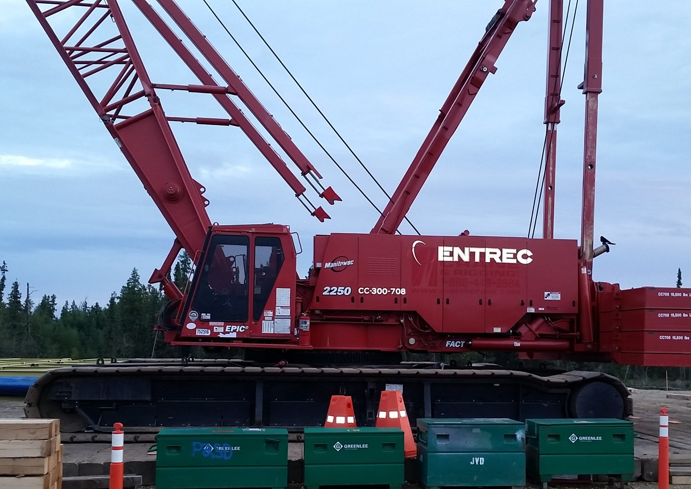
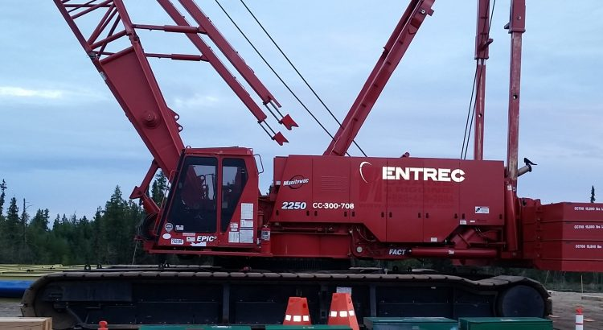

Updated Review of Entrec Corporation, 16% YTM, Maturing June of 2021

This week, Durig Capital reviews a Canadian heavy haul transportation and crane company.Entrec Corporation provides heavy haul transportation and crane solutions to the oil and gas, construction and power generation industries, among others.Entrec’s most recent results for both its fourth quarter and full year 2018 showcase healthy growth in the company’s U.S. operations.And given the volatility in oil and gas late last year, the company’s results are even more impressive.
(all figures quoted are in CAD dollars)
Entrec is following up its very successful 2017 expansion into Colorado with a 2019 expansion into Wyoming.In addition, the company looks to benefit handsomely from the new multi-billion dollar LNG Terminal currently under construction in Kitimat, British Columbia.These developments should propel Entrec to a more profitable 2019 and into 2020.The company’s 2021 convertible bonds are currently trading at a discount, giving investors an opportunity to increase their yield-to-maturity.With favorable pricing and competitive yield, Durig Capital has chosen these 2021 Entrec bonds for additional weighting in its Fixed Income 2 (FX2) High Yield Managed Income Portfolio, shown below.
Wrapping Up a Solid 2018 – Fourth Quarter and Full Year Results
With the continued recovery and stabilizing of oil and gas prices, Entrec posted fantastic results for both its fourth quarter and full year 2018.The company’s expansion of its U.S. based operations contributed to increases in both quarterly and full-year revenues.Some of its fourth quarter highlights include the following.
Entrec also posted impressive results for its full year 2018, with increases in revenues, adjusted EBITDA, and cash provided by operating activities.
In August 2018, Entrec’s year-to-date results for its U.S. based operations were already showing solid increases.
The company’s continuing expansion into U.S. based operations definitely had a favorable affect on its 2018 revenues.Looking forward into 2019 and 2020, John Stevens, Entrec’s President and CEO continues to see good things.
'The outlook for U.S. business continues to be very positive as we move into 2019.Assuming oil prices can be maintained at current levels or increase further in 2019, we should continue to see higher industry activity levels in the United States that should result in further improvements in profitability.'
About the Issuer
Based in Alberta Canada, Entrec Corporation is a heavy haul transportation and crane solution provider to the natural resources, construction, petrochemical, and power generation industries.Operating from 12 locations throughout western Canada, North Dakota and Texas, the company currently employs approximately 550 employees and operates a fleet of cranes, multi-wheeled trailers, and tractors, as well as lines of specialized platform trailers.Its crane fleet consists of rough-terrain cranes, mobile cranes, crawlers, carry decks and picker trucks.Its tractor and trailer fleet consists of tractor units, winch trucks, and a wide range of conventional heavy haul trailer units.Entrec’s customer list includes many large multinational energy companies such as Chevron, Conoco Phillips and Husky Energy.Entrec is one of the market leaders in a niche industry with high barriers to entry.
(Source: Entrec Investor Presentation, August 2018)
2019 and Beyond
Entrec has several strategies it will focus on to grow its business over the next few years.These strategies are both geographical and industry focused, aiming at growth in both the United States and Canada.The industries Entrec is focused on include the oil and gas industry, construction projects relating to LNG pipelines, infrastructure, power generation and other industries.
In the United States, Entrec is looking to grow in a few key regions.In late 2017, the company expanded operations into Colorado to support the oil and gas sector as well as other general construction projects.Operations in Colorado have continued to experience strong growth.Following on the heels of this growth, Entrec now plans to expand into Wyoming in 2019 to support its customers in the oil and gas sector.
The prospects for growth in Canada are even more exciting.Most of this excitement stems from LNG Canada’s positive final investment decision on its $40 billion liquefied natural gas (LNG) project in Kitimat, British Columbia.Entrec anticipates benefiting from this massive project in several ways, including:
Interest Coverage
For the fourth quarter, Entrec had operating income (without the effects of non-cash depreciation charge) of $3.7 million.Interest expense for the fourth quarter totaled $3.3 million.This translates to an interest coverage of 1.1x. In terms of liquidity, as of December 31, 2018, Entrec had cash and cash equivalents of $1.2 million with an additional $21.7 million available on the company’s asset based credit facility.Total liquidity as of December 31, 2018 was $22.9 million.
Risks
The risk for bondholders is Entrec’s ability to capitalize on its expanding U.S. operations as well as the $40 billion British Columbia LNG terminal.The company’s entry into the oil and gas sector in Colorado in 2017 has been paying off, and the company expects similar results upon its entry into Wyoming.The massive LNG terminal currently under construction in Kitimat, BC, presents an unprecedented opportunity for Entrec to expand its services in that region over the next three to five years.In consideration of these factors, the 16% yield to maturity on the company’s 2021 convertible bonds does appear to outweigh the risks identified here.
As much of Entrec’s revenues are still tied to the health of the energy industry, which in turn is directly affected by the price of oil and gas, Entrec is exposed to revenue volatility based on the volatility of the price of oil.Oil prices have trended mostly upward, but if prices were to fall again, this could decrease revenues for Entrec.
In general, bond prices rise when interest rates fall and vice versa.This effect tends to be more pronounced for lower couponed, longer-term debt instruments.Any fixed income security sold or redeemed prior to maturity may be subject to a gain or loss.Higher yielding bonds typically have lower credit ratings, if any, and therefore involve higher degrees of risk and may not be suitable for all investors.
Summary and Conclusion
Entrec is a niche player in a very specialized industry.Heavy equipment is vital and necessary to support other industries such as energy and infrastructure.The opportunities for Entrec in both the U.S. and Canada are compelling.New operations in Wyoming and continued strong growth in Colorado should continued to add to the company’s U.S. based revenues.And the multi-billion dollar LNG terminal now underway in Entrec’s backyard certainly presents the possibility of a steep increased demand for its services, further increasing revenues.Entrec could be looking at an outstanding 2019 and an even better 2020.The company’s 2021 convertible bonds are currently trading at a discount, giving these bonds a very competitive yield-to-maturity.With this excellent yield-to-maturity of about 16%, these 2021 bonds are ideal for additional weighting in Durig Capital’s Fixed Income 2 (FX2) High Yield Managed Income Portfolio.
Issuer: Entrec Inc.Ticker: ENT (TSX) Price: $0.23 CAD (as of 11/09/2017) Conversion Option Price: $1.00 CAD Coupon: 8.50% Maturity: 06/30/2021 Ratings: NA Pays: Monthly Price: ~ 86.0 Yield to Maturity: ~ 16.0%
Disclosure: Durig Capital and certain clients may hold positions in ENT’s June 2021 bonds. Disclaimer: Please note that all yield and price indications are shown from the time of our research.Our reports are never an offer to buy or sell any security.We are not a broker/dealer, and reports are intended for distribution to our clients.The high yield strategies presented in this review by Durig Capital may not be suitable for all investors.This is not investment advice from Durig Capital, nor a specific recommendation to buy or sell securities.If you have any questions or concerns about its suitability for your personal investment, you should seek specific investment advice from a registered professional before making an investment decision.
Share on Facebook Tweet Follow us
Posted On: 2019-04-12T00:00:00



Content Date: 2019-04-12
Download Date: 2021-07-09
Document ID: L0C04ERJG